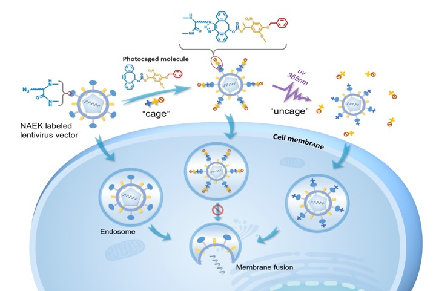
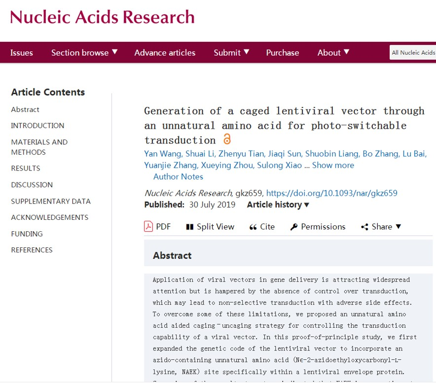

2019年7月30日，权威国际期刊《Nucleic Acids Research》（IF=11.561）在线正式发表了周德敏团队的最新研究成果“Generation of a caged lentiviral vector through an unnatural amino acid for photo-switchable transduction”。博士研究生王妍、博士后李帅为共同第一作者，周德敏教授、张传领老师为责任作者。该工作得到了国家自然科学基；国家重点研发计划项目；北大医学交叉研究种子基金的支持。
随着人类对疾病研究的不断深入，科学家们认识到：多种疾病与基因的结构或功能改变相关。而基因治疗由于可以深入修复发生改变的基因，从源头上治疗疾病的特点而被广泛关注。其中，慢病毒载体由于可以感染分裂期和静止期细胞等优势具有巨大的应用价值，但也由于其转导过程的不可控，对细胞及组织的选择性差，从而引发基因治疗安全性的问题一直被人们诟病。

周德敏课题组针对基因治疗用慢病毒载体转导过程不可控，没有细胞选择性的缺点，利用基因密码子扩展技术对病毒包膜蛋白的不同位点进行不同化学基团的定点修饰，系统研究和揭示病毒包膜蛋白的结构修饰与病毒载体转导活性之间的构效关系，筛选得到可以封闭病毒载体转导活性的特殊位点。通过在这些位点上引入优化设计的光敏感基团暂时封闭病毒转导活性，再利用光照在特定时间和空间去除封闭基团释放病毒活性，从而实现对病毒载体转导活性的精准操控，为设计和研发生物医学研究的新工具和新型基因治疗用重组病毒载体探索新方法和新思路。
通讯作者简介：
周德敏，北京大学药学院教授、教育部长江学者、科技部973首席科学家、全国生物候选药物牵头科学家、“万人计划”科技创新领军人才、国务院政府特殊津贴获得者、北京大学药学院院长、天然药物及仿生药物国家重点实验室主任。主要从事药物研发过程中新技术新方法的研究，方向包括新型抗病毒小分子、蛋白质生物大分子药物、药物靶点/生物标志物发现与确证等。牵头国家973、创新药物专项、基金委重大和国际合作基金等七项；在Science、PNAS、Chem Rev、JACS、JMC、NAR等杂志发表论文80余篇，研究的多个候选药获企业支持进入开发阶段；全国首届优秀博士论文获得者；担任Mol Pharm副主编、药学权威杂志J Med Chem和Eur J Med Chem编委、J Chin Pharm Sci【中国药学(英文版)】的执行主编。
张传领，北京大学药学院助理研究员，主要从事基于新型病毒载体的基因治疗研究。获得国家自然科学面上、青年基金；教育部博士点基金；北京市自然科学基金等多项资助。在Nucleic Acids Res, Biomaterials等杂志发表论文10余篇。共同发明已授权国际专利2项、国内专利4项。部分研究成果入选《北京市自然科学基金“十二五”期间优秀成果选编》。
